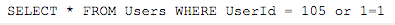

A SQL injection attack as defined by Wikipedia is a code injection technique, used to attack data-driven applications, in which malicious SQL statements are inserted into an entry field for execution (e.g. to dump the database contents to the attacker).
First-order attacks are when the attacker receives the desired information immediately. They can receive immediately through something like e-mail
Second-order attacks are when the attacker injects some data that will reside in the database, but the payload will not be immediately activated.
For either type of attack, the goal is for the attacker to inject their own SQL into the statement that will return valuable information. For example, if there is nothing to prevent a user from entering "wrong" input, the attacker can put a true statement in and get back everything in that table. So, if an attacker input this statement:
Since 1=1 is always true, the attacker would get access to everything in the Users table. This may contain: usernames, passwords, and other important information.
There are endless examples of how to inject SQL, but let's move on to how to prevent attacks.
You may think that a company would be safe if they used an intranet webiste, being unavailable to Internet users would give you a false sense of security. Many attackers are insiders that would have already have access to some of the information. To make sure employees don't get more information than they are authorized to have, the program should only allow valid data through. Once valid data is through it must be verified and cleaned up with other security features in place.
Another way of preventing attacks is to ecrypt data. A way to encrypt data is through a "salted hash". This will be used on certain information you need to keep secret, such as passwords. When a password is created, a randomly generated "salt" value is also created. The value of a salted hash is such that a dictionary attack would not work. Even if the password is determined by brute force, the use of salt will greatly slow down the process.